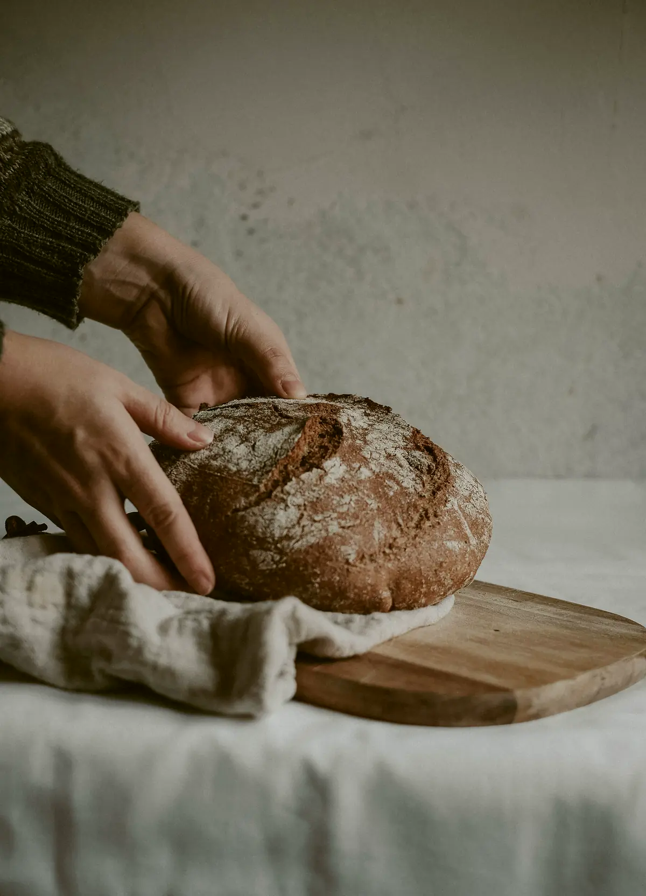
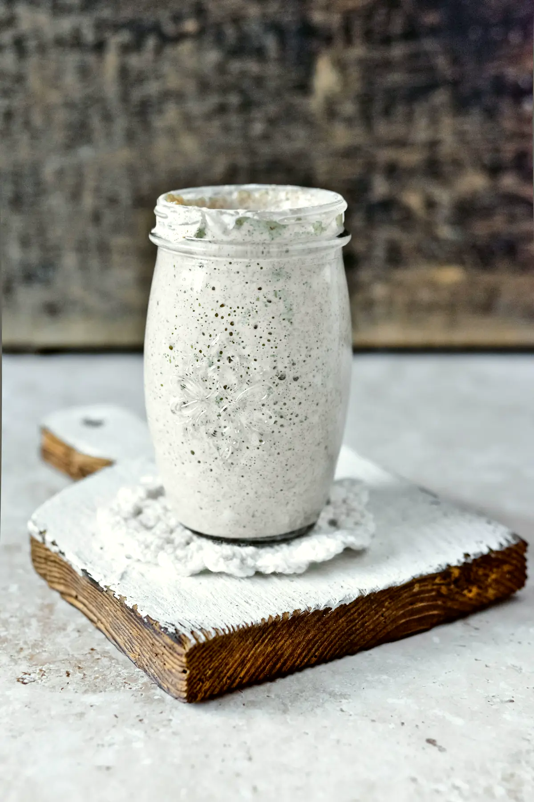

Paleta
Tipografia: Libre Caslon Display + Figtree
Grão sombreado, torrado em lotes pequenos toda segunda. O coado sai na hora, na V60, com água a 92 °C.
Caslon Display em peso regular para títulos (o Caslon é a letra dos impressos de padaria e jornal do século XIX); Figtree para texto, botões e números do cardápio. Hierarquia só por tamanho: 96 / 60 / 30 / 17 px.
Botões e interface
Sólido café com texto papel, raio 2 px; secundário é link sublinhado fino; abas com sublinhado que desliza. Acima: o menu depois de rolar.
Tratamento de foto



Luz natural de janela, grão leve, cor quente e consistente (mesmo tratamento em todas). Fotos grandes em cortes assimétricos que sangram até a borda da tela; nenhuma moldura.
Motion (2 exemplos)
- Títulos sobem linha a linha atrás de uma máscara (SplitText, 1,1 s, expo.out); o parágrafo entra 0,2 s depois. Nada pula: tudo desacelera.
- Fotos abrem como uma janela: clip-path de inset(12%) até a borda enquanto a foto encolhe de 1,15 para 1 (scrub); no processo de 36 h, o pino horizontal passa as etapas em fotos de altura cheia sobre papel tostado.
Os 3 problemas da v1
- Menu: barra de papel sólida desde o início, com fio de 1 px; o hero começa abaixo dela, então nunca cobre foto nem texto. Ao rolar, encolhe para 56 px e ganha leve desfoque sobre fotos.
- Vãos: sem cards; cada seção é uma grade de 12 colunas onde foto e texto ocupam linhas inteiras. O topo direito do cardápio passa a ser a própria foto, alinhada ao título.
- Hierarquia: um dominante por seção (o título de 96 px no hero, a foto de altura cheia no processo, a lista no cardápio). Escala 1,6× entre níveis e 120–160 px de respiro entre seções.
O que muda em relação à v1
Mantém: vitrine com relógio e linha do tempo, quadro de fornadas, pino das 36 h, contadores, abas, copy, SEO. Muda: o letreiro gigante "Sereno" vira wordmark discreto no menu (o título passa a ser a frase do hero); a porta de enrolar amarela vira uma abertura em clip-path; o split-flap vira números em Caslon que rolam dentro de uma máscara.